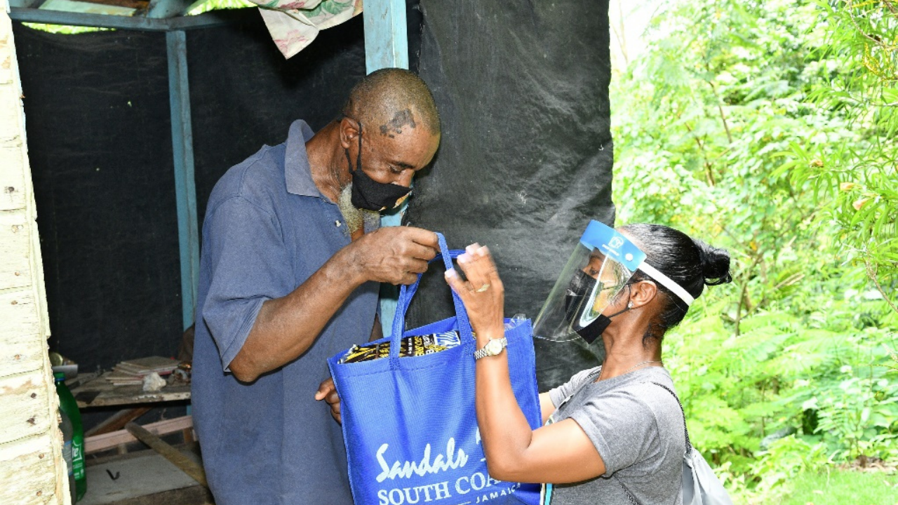

Birth Place: Savanna-la-Mar, Westmoreland

Colonists named this parish Westmoreland in 1703 after the English took over the island from Spanish rule in 1665; it is likely that it received its name as it was the most westerly point of the island. Savanna-la-Mar, the capital, was developed as a port from which sugar was exported and dates back to around 1730. The Spanish name Savanna-la-mar means “plain by the sea” and refers to its environment. One of the first Spanish settlements was also built at present-day Bluefields in this parish. During the serious times of Covid-19, Sandals (volunteer:Rochelle Forbes-Reid) stood up and delivered tokens to some shut-ins (Lavern Brooks). Twenty-eight years ago I was born here, with the harsh times and lack of opportunities, three years in my fathers mother decided to file for some of us to be brought to Miami. This will always be my home, taking my last breath here would be a privilege.
Photo by Mckoys News